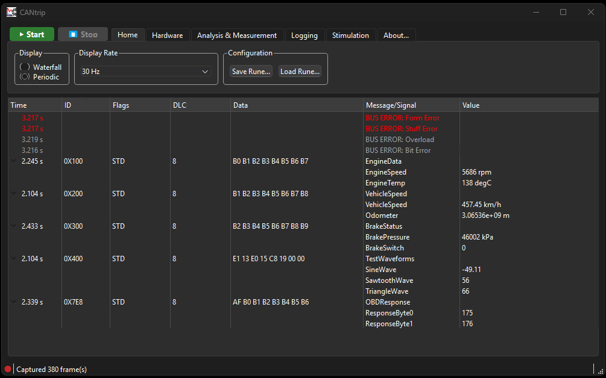
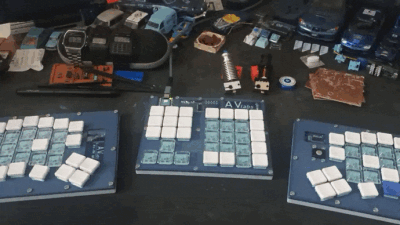
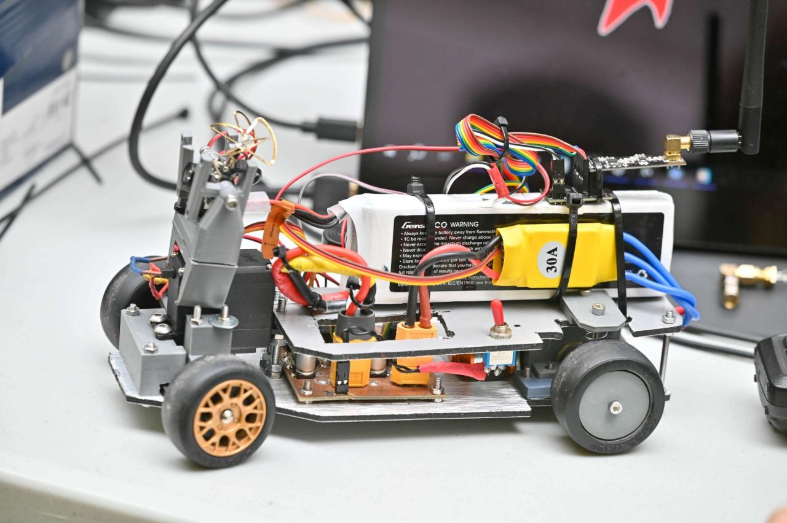
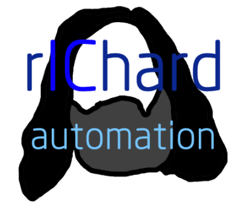

Automotive Testing Engineer — Bosch France
Hi, I'm Avesta. I'm an embedded systems engineer specialized in automotive testing. I work on the systems that keep a car running, sensing and talking to all its modules correctly.
Trained in embedded systems architecture and electronics at ESIEE Paris, I've spent the past six years at Bosch, working on a wide array of topics: first in engine control, specifically in software prototyping and virtualization tools, and then moving into testing and validation for brake systems.
Outside of work, I do... the exact same thing. I play around with tech I think is cool, and sometimes my "experiments" are useful. I am also quite fond of cats, cooking, making music, and Japanese animation.
From idea, to the requirements, spec book, GUI design, database handling, Java programming.
Preparatory cycle (2018–2020) — Theoretical Mathematics & Physics, Analog Electronics and Digital Electronics, Computer science.
Elective & Workshop classes: Neo4J database creation, Arduino with Bluetooth & Android robotics.
My personal projects, built on my own time.

Free and Open Source tool to view, measure and analyze CAN/CAN-FD bus traffic on Windows.

An ergonomic, modular mechanical keyboard with fully custom firmware — designed and built from the switches up.

REBEC2A (RC Electric Based Experimentation Chassis for Automotive Applications) started as a fun school project between friends that quickly turned into a fully fledged automotive experimentation platform.

School project: open source Android app to control a Bluetooth-connected relay through an AVR microcontroller. Supports voice control.